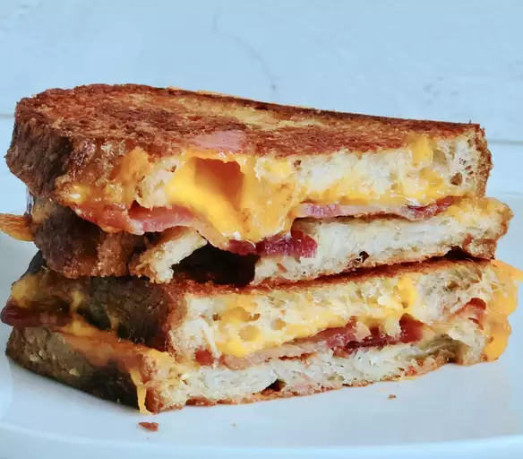

Grilled Cheese

Quick movie night munch
Curtido is a salad made out of cabbage and served with El Salvadoran pupusas. Stuff cooked pupusas with the curtido for a delicious treat!
Ingredients
- 2 pcs of egg
- 1 cabbage
- 2 carrots
- oyster sauce
- soy sauce
- salt
- pepper
- 1 cup of water
Directions
- Combine the cabbage and carrot in a large bowl and pour the boiling water over the mixture.
- Allow the mixture to steep for 5 minutes; drain well.
- Return the cabbage and carrots to the bowl.
- Mix in the green onion, vinegar, 1/2 cup of water, and oregano.
- Toss until all ingredients are combined.
- Chill for 20 minutes before serving.